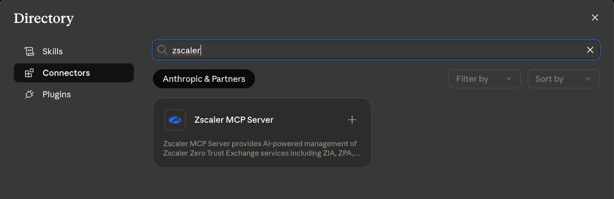
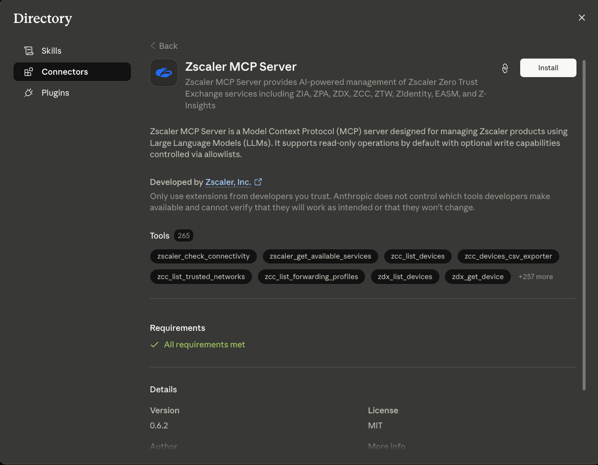
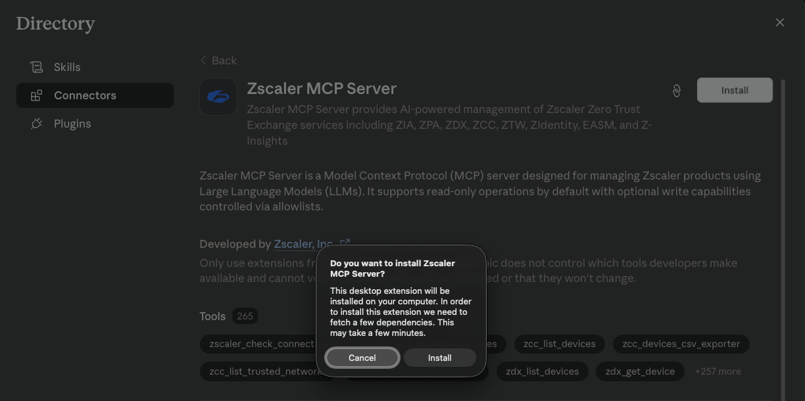
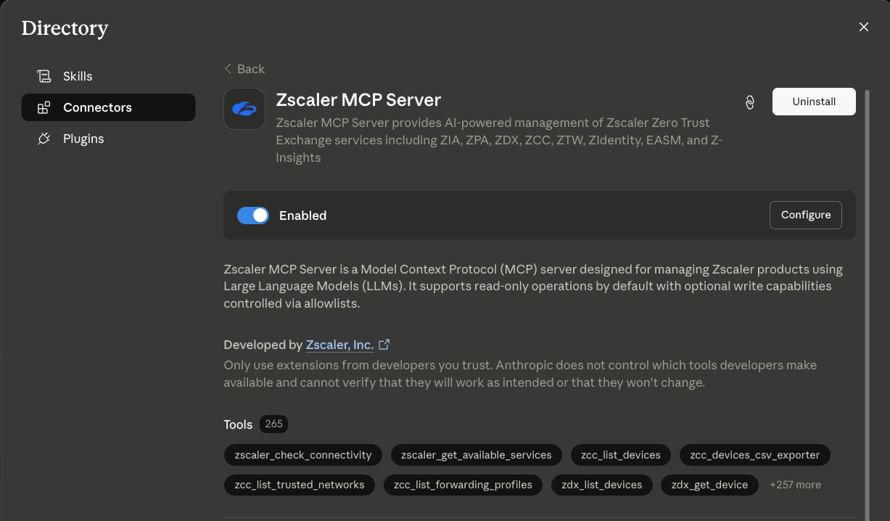
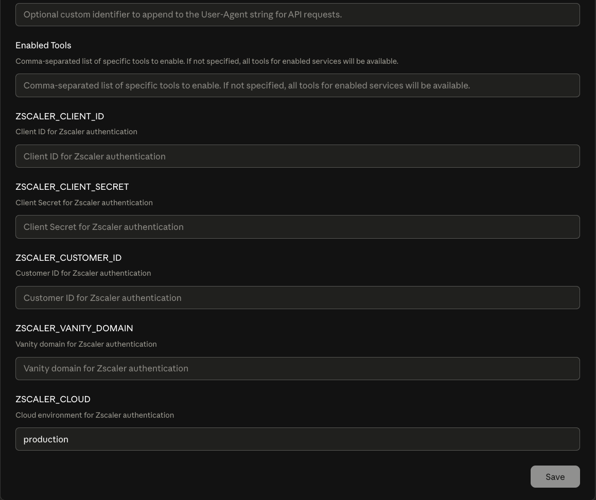

Claude¶
The Zscaler MCP Server ships in two flavours for Anthropic’s Claude family of products:
Integration |
Surface |
Best for |
|---|---|---|
Claude Code Plugin |
Claude Code CLI |
Terminal-driven workflows, IDE integrations, and the bundled 42 multi-step skills |
Claude Desktop Extension |
Claude Desktop app (Directory of Connectors) |
Point-and-click install from the Desktop app’s built-in Directory, no shell required |
Pick whichever matches the Claude product you already use — both expose the same Zscaler tool surface and read the same OneAPI credentials.
Claude Code Plugin¶
The Zscaler MCP Server is available as a native Claude Code Plugin, providing AI-assisted management of the Zscaler Zero Trust Exchange platform directly within Claude Code.
What’s Included¶
Component |
Location |
Purpose |
|---|---|---|
Plugin manifest |
|
Plugin metadata, MCP entry point, skills, and slash commands |
Marketplace manifest |
|
Claude Code marketplace listing and versioning |
Skills |
|
42 guided multi-step workflows for common Zscaler operations |
MCP config |
|
MCP server connection configuration |
Skills (42 guided workflows)¶
The plugin bundles service-specific skills that Claude auto-activates based on your prompt. See the Skills catalog for the full list.
Installation¶
Option 1: From the Claude Code Marketplace
claude plugin install zscaler
Option 2: From the repository
git clone https://github.com/zscaler/zscaler-mcp-server.git
cd zscaler-mcp-server
claude plugin install .
Option 3: Manual MCP configuration
When installed as a Claude Code plugin, the bundled .mcp.json resolves the env file relative to the plugin install directory using ${CLAUDE_PLUGIN_ROOT} — no path editing required:
{
"mcpServers": {
"zscaler-mcp-server": {
"command": "uvx",
"args": ["--env-file", "${CLAUDE_PLUGIN_ROOT}/.env", "zscaler-mcp"]
}
}
}
If you are wiring the MCP server up outside the Claude Code plugin context (e.g. a standalone MCP client), replace ${CLAUDE_PLUGIN_ROOT}/.env with an absolute path to your own .env file, since ${CLAUDE_PLUGIN_ROOT} is only resolved by Claude Code at runtime.
Optionally, run the server via the published Docker image instead:
{
"mcpServers": {
"zscaler-mcp-server": {
"command": "docker",
"args": [
"run", "-i", "--rm",
"--env-file", "/absolute/path/to/.env",
"zscaler/zscaler-mcp-server:latest"
]
}
}
}
Prerequisites¶
Claude Code installed
uv installed (provides the
uvxrunner used by the plugin’s.mcp.json)Zscaler OneAPI credentials configured in
.env(copy.env.exampleand fill in the values)Docker is optional — only required if you choose the Docker-based manual configuration above
Configuration¶
The plugin manifest at .claude-plugin/plugin.json defines:
Name:
zscalerMCP servers: Configured via
.mcp.jsonSkills path:
./skills/Commands path:
./commands/(slash commands)
The marketplace manifest at .claude-plugin/marketplace.json provides:
Version: Current plugin version
Category: Security
Owner: Zscaler (
devrel@zscaler.com)
Verification¶
After installation, verify by asking Claude Code:
“What Zscaler tools are available?”
or
“List my ZPA application segments”
Claude Desktop Extension¶
The Zscaler MCP Server is also published as a Claude Desktop Extension — a single-file .mcpb bundle installed directly from Claude Desktop’s built-in Directory of Connectors. Once enabled, every read-only Zscaler tool becomes available to your Claude Desktop conversations with no shell, no .env file, and no manual MCP configuration.
Requirements¶
Claude Desktop runs its own pre-flight check (the “All requirements met” banner on the extension’s detail page) before allowing the install. The extension needs:
Claude Desktop — the desktop application, not the Claude Code CLI
Python ≥ 3.11 — the bundled MCP server runs as a Python process
`uv <https://docs.astral.sh/uv/>`__ on your ``PATH`` — Claude Desktop launches the server with
uv run python -m zscaler_mcp.serveras declared in the bundle’smanifest.json. Ifuvcannot be found, the Requirements check fails and the Install button stays disabled. (If you don’t have a 3.11+ interpreter handy,uvcan install one for you viauv python install.)Zscaler OneAPI credentials —
client_id,client_secret,customer_id,vanity_domain. Supplied through the extension’s configuration form after install; no.envfile is needed.
The “fetch a few dependencies” dialog Claude Desktop shows during install is uv resolving the Python packages declared in the bundle’s pyproject.toml. First install may take a minute or two depending on network speed; subsequent launches reuse the cached environment and start in seconds.
Installation walkthrough¶
Step 1 — Find the extension in the Directory
Open Claude Desktop → Directory → Connectors and search for zscaler:

Step 2 — Review the extension details
Click the result to open the detail view. You’ll see the full description, the live tool count, the Zscaler-developed badge, and — once uv is detected on your system — the green “All requirements met” banner that enables the Install button:

Step 3 — Confirm the install
Click Install. Claude Desktop asks for confirmation and notes that it will fetch the Python dependencies declared in the bundle:

Step 4 — Verify the extension is enabled
When the install completes, the detail view updates to show the Enabled toggle and a Configure button. The extension is now installed but not yet usable — it has no credentials:

Step 5 — Configure your Zscaler credentials
Click Configure to open the credential form. Fill in your OneAPI values:

Field |
Purpose |
|---|---|
|
OneAPI client ID from the ZIdentity console |
|
OneAPI client secret |
|
Zscaler customer / tenant ID (required for ZPA tools) |
|
ZIdentity vanity domain (e.g. |
|
Cloud override; leave |
Enabled Tools |
Optional comma-separated allowlist; leave empty to expose every read-only tool the server registers |
User-Agent comment |
Optional suffix appended to outbound API calls’ |
Click Save. The extension is now wired up and Claude Desktop can invoke any read-only Zscaler tool from the chat interface.
Verification¶
In a new Claude Desktop conversation, ask:
“What Zscaler tools are available?”
Claude responds with the toolsets loaded for the OneAPI credentials you configured. You can also try a concrete query such as “list my ZPA application segments” — Claude prompts you to approve the tool call (the per-tool approval is part of Claude Desktop’s built-in safety surface), then returns the result.
Building the bundle locally¶
If you want to install a custom build (for example a development branch or a private fork), run:
make build-mcpb
from the repo root. This refreshes the manifest, packs every runtime file into zscaler-mcp-server-<VERSION>.mcpb, and writes the single bundle to the repo root. Drag that file into Claude Desktop’s Settings → Developer → Install Extension to install it locally without going through the Directory.
The bundle pulls all its dependencies via uv at install time, so it stays under 500 KB on disk and the lock files inside it pin every Python package to a reproducible version.
Write tools¶
By default the Desktop Extension exposes only read-only tools. To enable create / update / delete operations, set the Enable Write Tools toggle in the configuration form (or its underlying ZSCALER_MCP_WRITE_ENABLED=true env var) and populate the Write Tools Allowlist with the patterns you want to permit (e.g. zpa_create_*,zia_update_url_filtering_*). Destructive operations still require an in-session HMAC confirmation token — Claude is prompted to confirm before the tool actually executes.